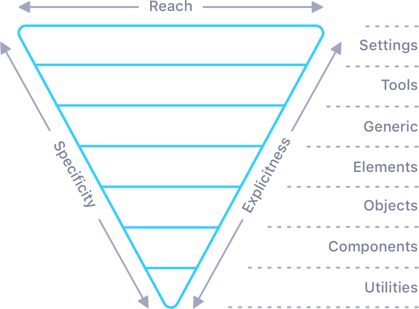

Neue Kit (German for new, said like "noya") is a performance focused, ITCSS based scaleable front-end kit. It's built for the modern web and only supports modern browsers although we are dragging IE11 along too! It includes a flex based fluid grid, common comprehendible JavaScript plugins and a minimalist style for all your friendly neighbourhood web elements.
There are 2 routes to get going with Neue Kit, you can either spin up a clean project with the Neue Kit structure or you can simply add the Neue Kit NPM package to your existing project.
npm install -g degit
degit neuekit/neuekit-starter yourprojectfolder
npm install
npm start
npm install neuekit --save
npm start
Neue Kit really is built for the modern web and as such only supports the cool kid browsers... and that kid who sits in the corner and eats flies.
Of course you can adjust the supported browsers by filling in the package.json browserlist config. Both the CSS and JS are configurable in this manner. See our default config on browserl.ist
- Chrome 49+
- Safari 12+
- iOS Safari 11+
- Firefox 63+
- Samsung 4+
- Opera 56+
- Edge 17+
- Internet Explorer 11+
- UC Browser 11.8+
Inverted triangle CSS is a way to architect your styles. It focusses on organising your styles in order of reach and specificity, which makes your stylesheets easier to deal with. It aims to fix a classic CSS problem, coming back to a previous project or inheriting one and not knowing where new styles should go in the stylesheet. This is most commonly solved by adding them to the end of the sheet, which is less than desirable.
